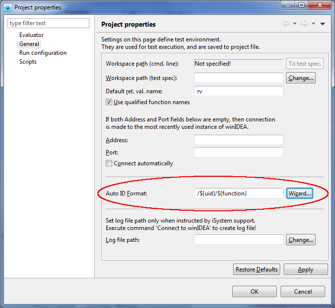
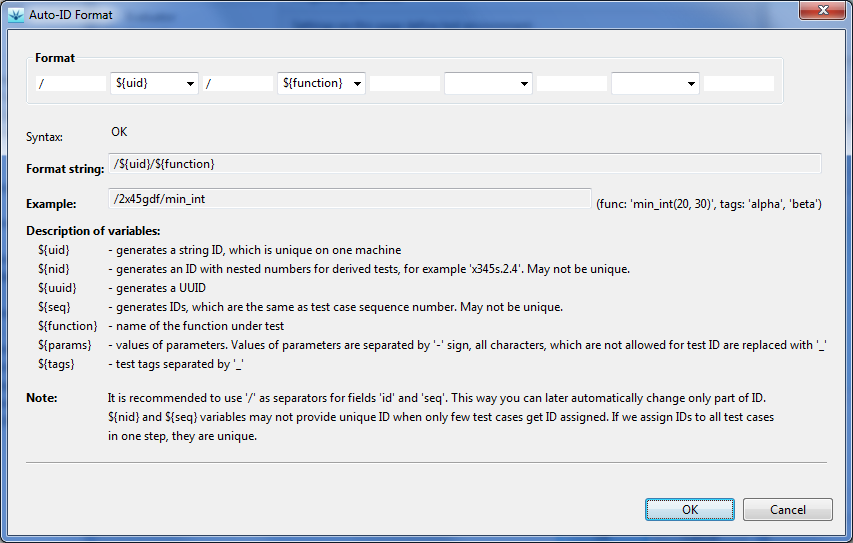
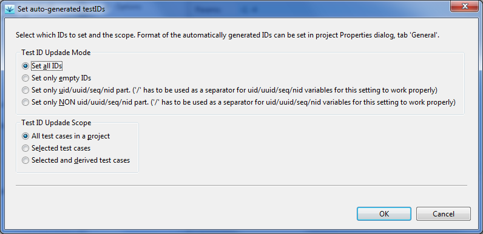

File | Properties), with Auto ID
Format string:

The format string consists of fixed text and variables, which have the following syntax:${<varName>}.
The main property of IDs is their uniqueness, but we can also include some other information about the test case, for example function parameters. For this reason the test ID generator can create IDs composed of a unique string and some test case parameters. For unique part of an ID we use one of variables${uid},
${nid}, ${uuid}, or ${seq}. It is highly
recommended to use the character '/' as a separator for unique part
of test ID. If later want to update only informational
part, because parameters changed, testIDEA can split the
test ID and change only the requested part. Example:
/${uid}/${params}
Since only a limited set of characters is allowed for test IDs,
all invalid characters in function names, parameters and tags are
replaced by underscore character. '-' is used as a separator between
parameters and tags.
iTools | Set Test IDs:

For new tests we can assign ID on creation if we check theAuto generate ID check box in the New test dialog
(command File | New Test).